Quem não pôde ir assiste na hora.
A gente acompanha o seu evento com o celular e publica os stories enquanto tudo acontece. Depois, é só rever.
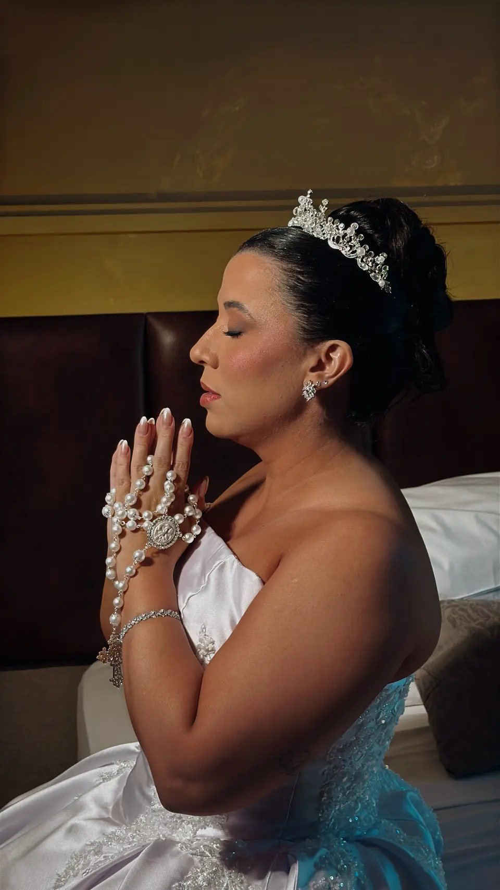
Stories
Publicados durante o evento, para quem está longe acompanhar.
Filme
A história do dia, com narrativa e emoção, para guardar do jeito que ele foi.
Making of
Os preparativos também ficam registrados.
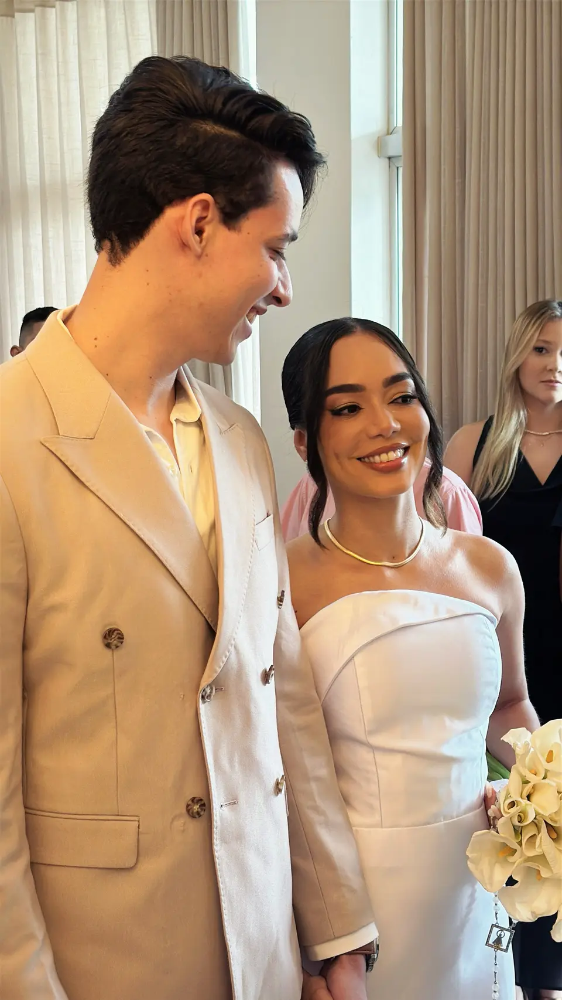
Ainda sem data? Pode chamar assim mesmo.
Sua marca no Instagram, o mês inteiro.
A equipe que cobre um casamento também cuida do Instagram de uma clínica: planejamento, fotos, vídeos e posts, com constância.
Design para a Vivence Odontologia e a Vivence Estética Social media em parceria com @yngrid_gs 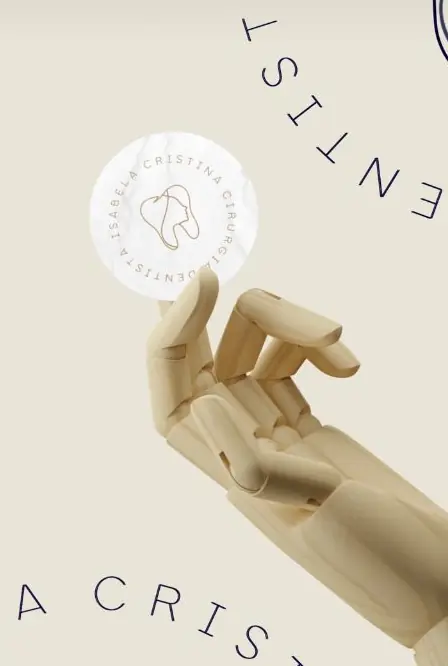
Identidade visual para uma cirurgiã-dentista 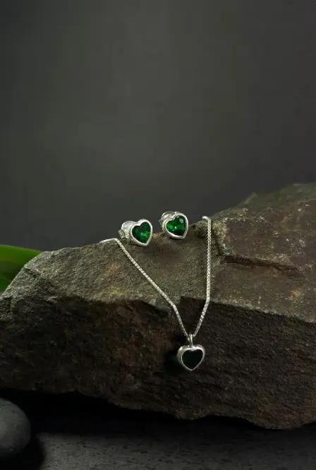
Foto de produto 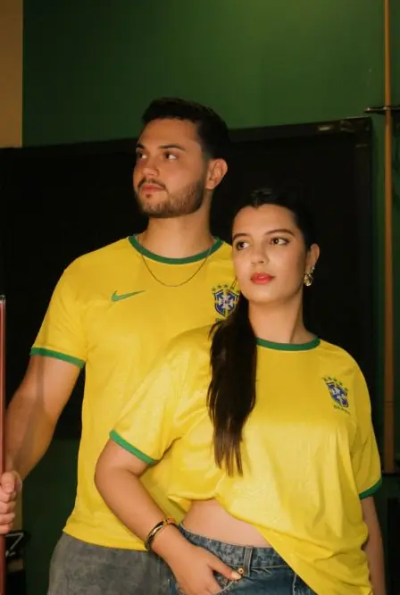
Ensaio fotográfico
Também fazemos identidade visual, vídeo para reels e anúncios e landing pages feitas primeiro para o celular, com um objetivo: trazer contato.
Já confiaram na Yllustre
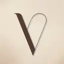
Vivence Odontologia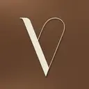
Vivence Estética- Clínica SD
- Oral Office
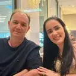
Oral Health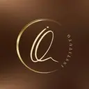
Instituto Queiroz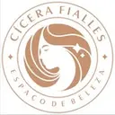
Cícera Fialles- Studio Mayne
- Lázara
- Sabrina Fernandes
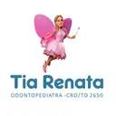
Tia Renata- Vogado
- Bendita Coalhada
- Alspider Club
- Celebrate Festas
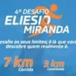
Desafio Eliesio Miranda- 6º BPM
Antes de mandar a mensagem.
O que faz um storymaker?
Acompanha o seu evento com o celular e publica stories enquanto tudo acontece. Quem não pôde ir assiste na hora, e você revive depois.
A minha data está livre?
Mande a data pelo WhatsApp e a equipe confirma a agenda para você.
Consultar minha data (abre o WhatsApp)Quanto custa?
Depende do serviço, da duração e do local. Cada orçamento é feito sob medida pelo WhatsApp, sem tabela engessada.
Vocês atendem na minha cidade?
Conte a cidade do evento na mensagem, e a equipe responde sobre agenda e deslocamento.
Qual a diferença entre story, vídeo e filme?
Story é o registro rápido, publicado durante o evento. Vídeo é conteúdo editado para redes, campanhas e anúncios. Filme é a história completa do dia, com narrativa e emoção, para guardar.
Vocês fazem só eventos?
Não. Também cuidamos de marcas: Instagram, vídeo, identidade visual e landing pages para consultórios, clínicas, espaços de beleza e empresas.
Conversar sobre minha marca (abre o WhatsApp)Dá para juntar vários serviços?
Dá. Story, vídeo, filme, social media, design e landing page podem entrar no mesmo projeto, com a mesma equipe.
O que acontece depois da mensagem?
A gente entende o que você precisa e monta uma proposta sob medida. Nada de pacote fechado: cada projeto começa com uma conversa.
Uma mensagem já começa tudo.
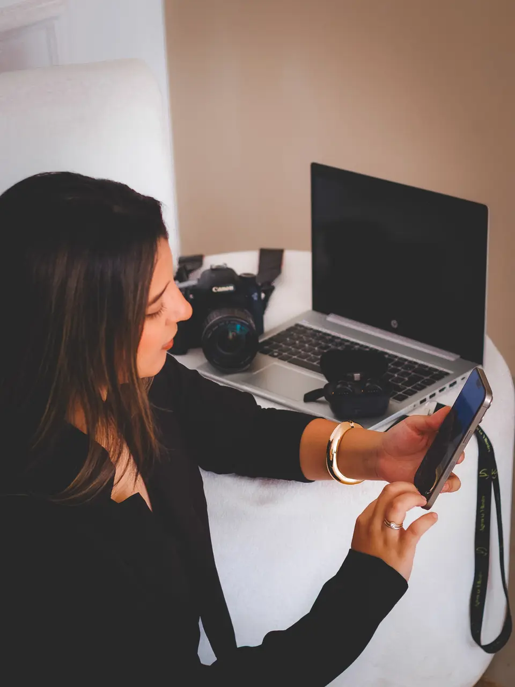
Olá, Yllustre! Vim pelo site e quero falar sobre , no dia , em . Tenho interesse em .. Preciso de . Nosso perfil é .
Você revisa a mensagem no WhatsApp antes de enviar. O que ficar em branco não entra.